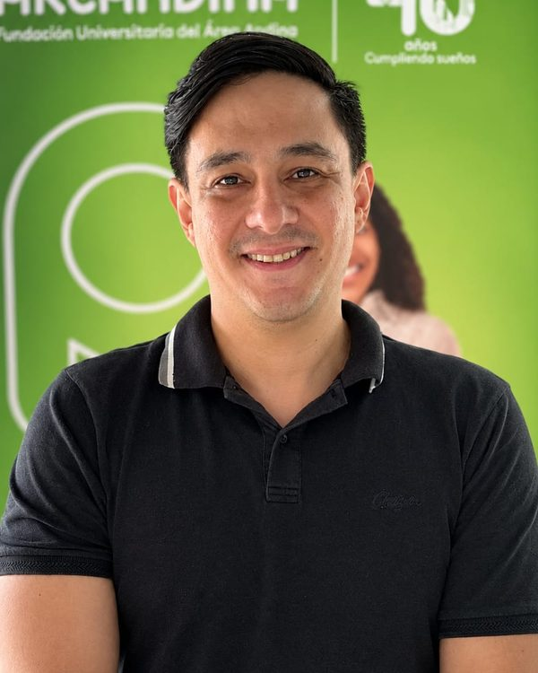
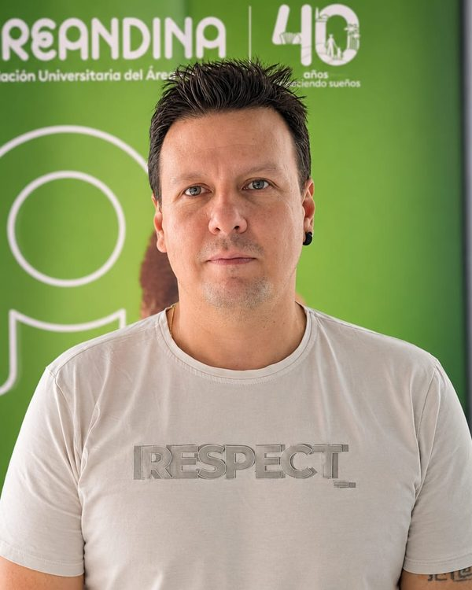
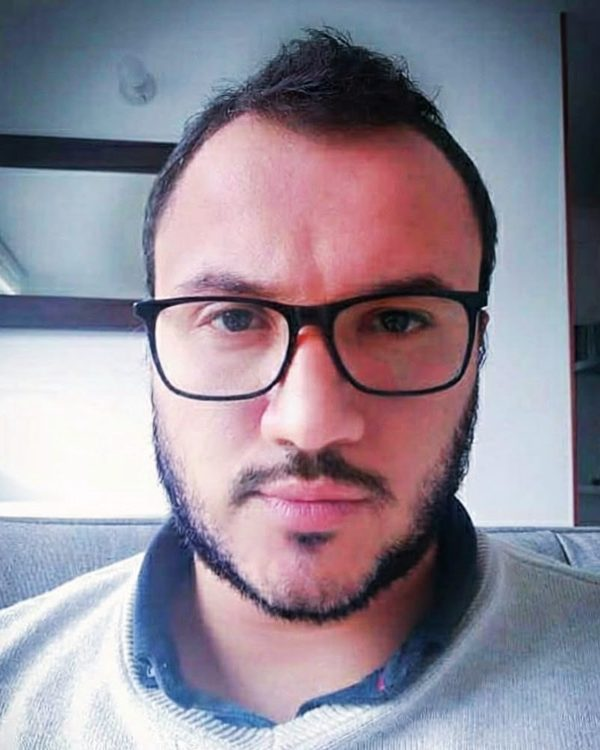
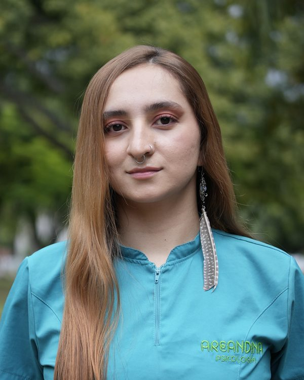

Quiénes somos
Un equipo de docentes, estudiantes y una graduada de psicología de Areandina que investiga cómo circulan los afectos de pareja en Instagram y TikTok.
El equipo
-

Carlos Alberto Urueña Jaramillo
Investigador principal
Psicólogo, especialista en Gerencia Social y estudiante de maestría en Educación y Desarrollo Humano. Docente del Programa de Psicología de la Fundación Universitaria del Área Andina (Pereira), donde enseña investigación y psicología social comunitaria. Su interés está en el componente afectivo del poder. Dirige el proyecto y coordina el diseño del estudio mixto.
-

Harold David Pérez Ramírez
Coinvestigador
Psicólogo, magíster en Intervención Social en las Sociedades del Conocimiento y con la maestría en Psicoterapias de Tercera Generación en proceso de titulación. Docente de metodologías activas y aprendizaje situado; ha coordinado prácticas profesionales y liderado semilleros. Trabaja en intervención psicosocial comunitaria, conflicto armado y reintegración social.
-

José Areth Estévez Ceballos
Coinvestigador
Psicólogo, licenciado en Ciencias Naturales, magíster en Desarrollo Educativo y Social y candidato a doctor en Educación, con más de 15 años en educación superior. Lidera el semillero PRAXIS, dirige tesis de posgrado en la Universidad de Caldas y ejerce como psicoterapeuta desde la terapia narrativa.
-
Santiago Andrés Caro Morales
Asistente de investigación
Estudiante de psicología.
-

Valentina Ramírez Montoya
Asistente de investigación
Estudiante de quinto semestre de Psicología y monitora académica. Gestora del grupo de teatro educativo GRUTA, integrante de la Escuela de Líderes de Bienestar Universitario e investigadora del semillero COVA.
-
Salomé Barragán Mejía
Graduada de Areandina
Perfil por completar.
Grupos y semillero
El proyecto reúne a dos grupos de investigación de la Fundación Universitaria del Área Andina y a un semillero, con la participación de los programas de Psicología (Pereira) y Psicología Virtual (Bogotá).
Paideia
Grupo de investigación (COL0026833) que avala el proyecto, adscrito al Programa de Psicología de Pereira, unidad responsable del estudio.
Psynergia
Grupo de investigación (COL0180449) participante en el proyecto, con el programa de Psicología Virtual (Bogotá) como unidad participante.
Semillero COVA
Semillero de investigación al que pertenece parte del equipo estudiantil, con el que se articula la formación investigativa en el proyecto.